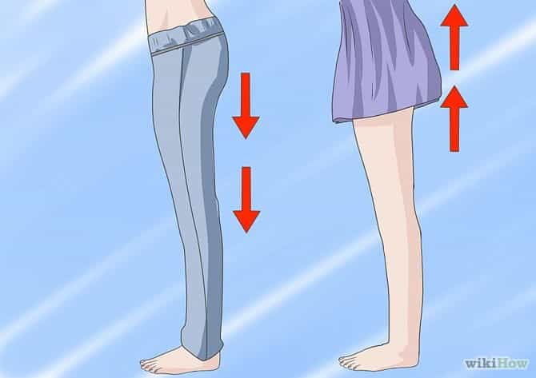
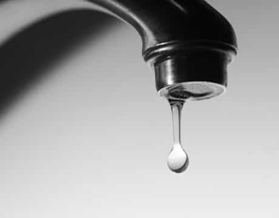
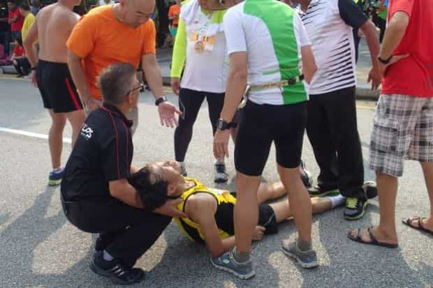
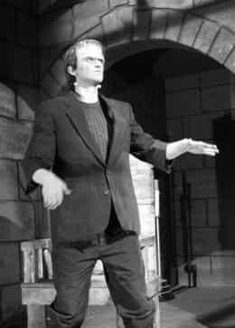
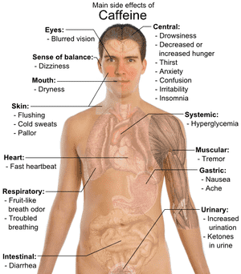
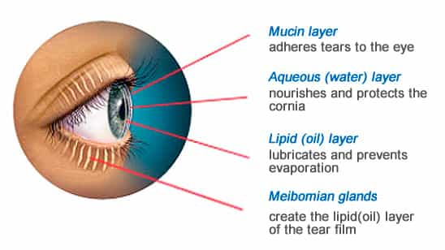
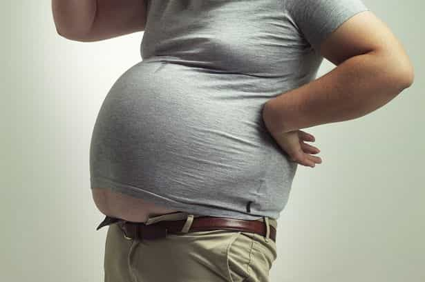

Daryush "Roosh" Valizadeh created ROK in October 2012. You can visit his blog at RooshV.com or follow him on Twitter and Facebook.


In spite of my best efforts, I have been unable to halt the effects of time upon my body. While I have no serious health issues, a crop of minor annoyances have popped up. I want to share them so the young men reading today have an idea of what to expect as they get older.

In my early 20’s, I remember masturbating at least once a day. I used to think about sex constantly and be ready to fornicate with anything remotely decent. Today, I don’t think of sex at all unless I’m in the vicinity of a beautiful girl or I haven’t been laid in at least two weeks. Because of that, I’ve been far more productive when it comes to work and can think more clearly, but I do feel like I’m missing out on a primal motivator that drove me in the past.
I know many men who take various hormonal substances to re-gain their vigor, but I don’t yet see it as a problem requiring medicinal supplementation.

It takes me more time to shake off the remaining drops after urination, as if there is greater leftover still in the pipes. I’m aware that I could do reps of squeezing exercises that hit my PC muscles, but it’s not yet a big problem

After a workout, my body wants to call it a day and rest. To combat this, I sometimes have to take an espresso shot to help get me through the remainder of the day, something I didn’t have to do when I was younger. When I was boxing in Ukraine a couple years ago, some of the workouts were so intense that I had to go to sleep right after. Working out is supposed to increase your overall energy in theory, but you must account for long periods of rest.

When I wake up in the morning, my spine, shoulders, wrists, ankles, and knees feel rigid, and I have to move around a bit until they are lubricated. I also have to stretch a lot more than when I was younger.

After eating a salty meal, I have to drink huge amounts of water afterwards to re-balance my system. My kidneys also go crazy if I go too heavy on diuretic drinks during the day, such as consuming coffee in the afternoon and then beer in the evening. During periods of drinking coffee every day, I feel like I’m in a chronic state of dehydration.

I’ve always had slightly dry eyes, but during the winter it’s getting bad enough that I have to sometimes skip out on wearing contacts. I’ve been able to temporarily solve this problem with eye drops and heat compresses, but I’m not producing enough eye oil. My eye doctor thinks it’s due to being on the computer so much, where blinking is less frequent.

I haven’t put more fat on my stomach, but I noticed it’s a bit more distended than when I was younger, as if it wants to round out. My guess is that this is from lower levels of testosterone and just general aging.
The above changes aren’t debilitating by any means, but they are changes nonetheless. Based on what I see in my father, I’m guessing that my body will degrade slowly at first, and then a bit more rapidly after I hit 50 and all the little problems escalate further. As long as my dick works and I don’t need to hire a Filipina nurse to sponge bathe me, I think I’ll be able to adapt to the changes that come.
Read More: 6 Tips For Avoiding Burnout